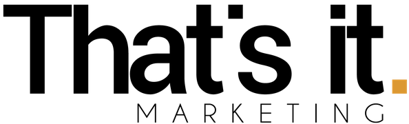

Der Bot übernimmt das Setting für alle Leads der Landingpage „Kostenloser Website-Entwurf“ und bucht das Strategiegespräch mit Tim direkt in Let's Meet.
Bisher ruft das Team an, erreicht viele nicht und stimmt den Termin per Mail ab. Jetzt schreibt der Bot direkt nach der Anfrage per WhatsApp, stellt die Settingfragen und trägt den Termin selbst ein.
Die erste Nachricht geht direkt nach der Anfrage raus. Kommt sie nachts, plant der Bot sie für den Morgen.
Problem, Ziel, Zeitpunkt, Budget und Entscheider stehen fest, bevor Tim ins Gespräch geht.
Der Termin landet mit Google Meet Link in Tims Kalender, inklusive Bestätigungsmail an den Lead.

WhatsApp Setting BotAuf der Landingpage setzt der Lead freiwillig den Haken „Am schnellsten per WhatsApp“.
Die Landingpage gibt den Lead gesichert an Let's Meet weiter, von Server zu Server.
Eine von Meta freigegebene Vorlage mit drei Knöpfen eröffnet den Chat.
Sieben kurze Fragen, wo immer möglich mit Knöpfen statt Tipparbeit.
Strategiegespräch mit Tim, 60 Minuten per Google Meet, Bestätigung per Mail.
Am Vortag per WhatsApp, zusätzlich zu den Erinnerungsmails.
Geht direkt nach dem Formular raus, in zwei Fassungen, weil das Formular schon fragt, ob es eine Website gibt.
Kurzform des GAP Findings: Tim bekommt das Ziel so, wie der Lead es selbst sagt. Sprachnachrichten werden in Text umgewandelt.
Daran erkennt der Bot heiße Leads: „So schnell es geht“ plus passendes Budget heißt Termin schon nach 3 Werktagen.
Gefragt wird nicht „Habt ihr das Budget?“, sondern ob 5.000 € ein Rahmen wären, wenn der Entwurf überzeugt.
Der Knopf ist mit Absicht dabei: Unentschlossene landen in der Einwandbehandlung statt im Nein. Höchstens zwei Anläufe.
Freie Zeiten kommen live aus Let's Meet, an zwei verschiedenen Tagen. „Andere Zeit“ fragt nach dem Wunschtag.
Der Termin steht schon im Kalender. Wer mitentscheidet, kommt als Notiz an die Buchung, damit Tim Bescheid weiß.
Danach meldet sich der Bot nur noch am Tag vor dem Termin mit einer Erinnerung.
Der Link landet als Notiz an der Buchung und hilft beim Entwurf. Wer keine im Kopf hat, tippt einfach auf den Knopf.
Zwei Terminvorschläge mit Tim, auf Wunsch auch eine eigene Wunschzeit.
Höchstens zwei Anläufe, etwa: Was ist ein neuer Kunde für euch wert? Bleibt der Lead unsicher, bekommt er trotzdem einen Termin.
Kein Nachbohren. Der Lead kann sich jederzeit wieder melden.
„Danke dir für die ehrliche Antwort, Max! Dann ist der Entwurf gerade vermutlich nicht der richtige Schritt für euch, und wir möchten dir nicht unnötig Zeit stehlen. Falls sich bei euch etwas ändert, schreib uns einfach hier, wir sind gern für dich da.“
Frühestens 7 Tage nach der Anfrage. So viel Zeit braucht der Entwurf.
„So schnell es geht“ und das Budget passt: schon nach 3 Werktagen.
Keine Wochenenden, keine Feiertage in NRW, keine belegten Zeiten in Tims Kalender.
„Donnerstag nachmittags“ versteht der Bot und sucht die passenden freien Zeiten.
Erste Nachricht mit Knöpfen, direkt nach der Anfrage.
Kurze Erinnerung: „Passt es gerade?“ mit zwei Knöpfen.
Mail ans Team: bitte anrufen. Ab hier übernimmt ein Mensch.
Kurz nachgehakt, die offene Frage wird wiederholt.
Zweites, letztes Nachhaken im Chat.
Mail ans Team mit allen Antworten bis hierhin.
Antwortet jemand aus der WhatsApp Business App in den Chat, pausiert der Bot dort sofort.
Der Bot sagt Bescheid, gibt per Mail an das Team weiter und schweigt ab da.
Die Nummer wird nie wieder angeschrieben, auch nicht bei einer neuen Anfrage.
Fremde Nummern ignoriert der Bot komplett und speichert nichts davon.
Jeder Chat mit Verlauf, Status und allen Antworten. Bot pausieren oder fortsetzen mit einem Klick.
Will der Lead umbuchen, schickt der Bot den Link, über den er es selbst erledigt.
Firmennummer per Coexistence an die Cloud API anbinden, QR Code in der Business App scannen.
Systemnutzer mit dauerhaftem Token, dazu das App Secret und die Phone number ID notieren.
Vier Nachrichtenvorlagen mit festem Text und Knöpfen, Freigabe durch Meta abwarten.
Beschreibung mit dem Hinweis auf digitale Unterstützung, das Team liest jede Nachricht mit.
Sechs Secrets im Worker von Let's Meet, ein gemeinsamer Schlüssel bei der Landingpage.
Rückruf Adresse von Let's Meet hinterlegen, beide Felder für Nachrichten abonnieren.
Den neuen Stand von Let's Meet und Landingpage veröffentlichen.
Mit eigener Nummer anfragen, Verlauf im Backoffice prüfen, Testtermin absagen, „Stopp“ senden.